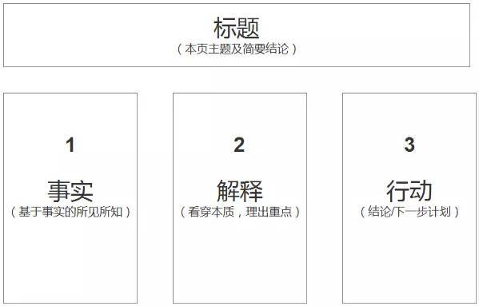

<!DOCTYPE html><html lang="en-us" >

<head>

  <meta charset="utf-8">
  <meta name="viewport" content="width=device-width, initial-scale=1">
  <meta http-equiv="X-UA-Compatible" content="IE=edge">
  <meta name="generator" content="Source Themes Academic 4.8.0">

  

  
  
  
  
  
    
    
    
  
  

  

  
  
  
    
  
  <meta name="description" content="给研究室新人的一些工具选择上的建议。">

  
  <link rel="alternate" hreflang="en-us" href="https://li-hongmin.github.io/post/toolboxes/">

  


  
  
  
  <meta name="theme-color" content="#2962ff">
  

  
  

  
  
  
  
    
    <link rel="stylesheet" href="https://cdnjs.cloudflare.com/ajax/libs/academicons/1.8.6/css/academicons.min.css" integrity="sha256-uFVgMKfistnJAfoCUQigIl+JfUaP47GrRKjf6CTPVmw=" crossorigin="anonymous">
    <link rel="stylesheet" href="https://cdnjs.cloudflare.com/ajax/libs/font-awesome/5.12.0-1/css/all.min.css" integrity="sha256-4w9DunooKSr3MFXHXWyFER38WmPdm361bQS/2KUWZbU=" crossorigin="anonymous">
    <link rel="stylesheet" href="https://cdnjs.cloudflare.com/ajax/libs/fancybox/3.5.7/jquery.fancybox.min.css" integrity="sha256-Vzbj7sDDS/woiFS3uNKo8eIuni59rjyNGtXfstRzStA=" crossorigin="anonymous">

    
    
    
      
    
    
      
      
        
          <link rel="stylesheet" href="https://cdnjs.cloudflare.com/ajax/libs/highlight.js/9.18.1/styles/github.min.css" crossorigin="anonymous" title="hl-light">
          <link rel="stylesheet" href="https://cdnjs.cloudflare.com/ajax/libs/highlight.js/9.18.1/styles/dracula.min.css" crossorigin="anonymous" title="hl-dark" disabled>
        
      
    

    
    <link rel="stylesheet" href="https://cdnjs.cloudflare.com/ajax/libs/leaflet/1.5.1/leaflet.css" integrity="sha256-SHMGCYmST46SoyGgo4YR/9AlK1vf3ff84Aq9yK4hdqM=" crossorigin="anonymous">
    

    

    
    
      

      
      

      
    
      

      
      

      
    
      

      
      

      
    
      

      
      

      
    
      

      
      

      
    
      

      
      

      
    
      

      
      

      
    
      

      
      

      
    
      

      
      

      
    
      

      
      

      
    
      

      
      

      
        <script src="https://cdnjs.cloudflare.com/ajax/libs/lazysizes/5.1.2/lazysizes.min.js" integrity="sha256-Md1qLToewPeKjfAHU1zyPwOutccPAm5tahnaw7Osw0A=" crossorigin="anonymous" async></script>
      
    
      

      
      

      
    
      

      
      

      
    
      

      
      
        
      

      
    
      

      
      

      
    

  

  
  
  
  <link rel="stylesheet" href="https://fonts.googleapis.com/css?family=Montserrat:400,700%7CRoboto:400,400italic,700%7CRoboto+Mono&display=swap">
  

  
  
  
  
  <link rel="stylesheet" href="/css/academic.css">

  


<script async src="https://www.googletagmanager.com/gtag/js?id=UA-154946251-1"></script>
<script>
  window.dataLayer = window.dataLayer || [];

  function gtag() {
      dataLayer.push(arguments);
  }

  function trackOutboundLink(url, target) {
    gtag('event', 'click', {
         'event_category': 'outbound',
         'event_label': url,
         'transport_type': 'beacon',
         'event_callback': function () {
           if (target !== '_blank') {
             document.location = url;
           }
         }
    });
    console.debug("Outbound link clicked: " + url);
  }

  function onClickCallback(event) {
    if ((event.target.tagName !== 'A') || (event.target.host === window.location.host)) {
      return;
    }
    trackOutboundLink(event.target, event.target.getAttribute('target'));  
  }

  gtag('js', new Date());
  gtag('config', 'UA-154946251-1', {});

  
  document.addEventListener('click', onClickCallback, false);
</script>


  


  
  

  

  <link rel="manifest" href="/index.webmanifest">
  <link rel="icon" type="image/png" href="/images/icon_hu0b7a4cb9992c9ac0e91bd28ffd38dd00_9727_32x32_fill_lanczos_center_2.png">
  <link rel="apple-touch-icon" type="image/png" href="/images/icon_hu0b7a4cb9992c9ac0e91bd28ffd38dd00_9727_192x192_fill_lanczos_center_2.png">

  <link rel="canonical" href="https://li-hongmin.github.io/post/toolboxes/">

  
  
  
  
  
  
  
    
  
  
  <meta property="twitter:card" content="summary_large_image">
  
  <meta property="og:site_name" content="李鸿敏 (Li Hongmin)">
  <meta property="og:url" content="https://li-hongmin.github.io/post/toolboxes/">
  <meta property="og:title" content="Researcher&#39;s Toolboxes | 李鸿敏 (Li Hongmin)">
  <meta property="og:description" content="给研究室新人的一些工具选择上的建议。"><meta property="og:image" content="https://li-hongmin.github.io/post/toolboxes/featured.png">
  <meta property="twitter:image" content="https://li-hongmin.github.io/post/toolboxes/featured.png"><meta property="og:locale" content="en-us">
  
    
      <meta property="article:published_time" content="2021-04-23T19:14:32&#43;09:00">
    
    <meta property="article:modified_time" content="2021-04-23T19:14:32&#43;09:00">
  

  


    


  


<script type="application/ld+json">
{
  "@context": "https://schema.org",
  "@type": "BlogPosting",
  "mainEntityOfPage": {
    "@type": "WebPage",
    "@id": "https://li-hongmin.github.io/post/toolboxes/"
  },
  "headline": "Researcher's Toolboxes",
  
  "image": [
    "https://li-hongmin.github.io/post/toolboxes/featured.png"
  ],
  
  "datePublished": "2021-04-23T19:14:32+09:00",
  "dateModified": "2021-04-23T19:14:32+09:00",
  
  "publisher": {
    "@type": "Organization",
    "name": "李鸿敏 (Li Hongmin)",
    "logo": {
      "@type": "ImageObject",
      "url": "https://li-hongmin.github.io/images/icon_hu0b7a4cb9992c9ac0e91bd28ffd38dd00_9727_192x192_fill_lanczos_center_2.png"
    }
  },
  "description": "给研究室新人的一些工具选择上的建议。"
}
</script>

  

  


  


  


  <title>Researcher&#39;s Toolboxes | 李鸿敏 (Li Hongmin)</title>

</head><body id="top" data-spy="scroll" data-offset="70" data-target="#TableOfContents" >

  <aside class="search-results" id="search">
  <div class="container">
    <section class="search-header">

      <div class="row no-gutters justify-content-between mb-3">
        <div class="col-6">
          <h1>Search</h1>
        </div>
        <div class="col-6 col-search-close">
          <a class="js-search" href="#"><i class="fas fa-times-circle text-muted" aria-hidden="true"></i></a>
        </div>
      </div>

      <div id="search-box">
        
        <input name="q" id="search-query" placeholder="Search..." autocapitalize="off"
        autocomplete="off" autocorrect="off" spellcheck="false" type="search">
        
      </div>

    </section>
    <section class="section-search-results">

      <div id="search-hits">
        
      </div>

    </section>
  </div>
</aside>


  


<nav class="navbar navbar-expand-lg navbar-light compensate-for-scrollbar" id="navbar-main">
  <div class="container">

    
    <div class="d-none d-lg-inline-flex">
      <a class="navbar-brand" href="/">李鸿敏 (Li Hongmin)</a>
    </div>
    

    
    <button type="button" class="navbar-toggler" data-toggle="collapse"
            data-target="#navbar-content" aria-controls="navbar" aria-expanded="false" aria-label="Toggle navigation">
    <span><i class="fas fa-bars"></i></span>
    </button>
    

    
    <div class="navbar-brand-mobile-wrapper d-inline-flex d-lg-none">
      <a class="navbar-brand" href="/">李鸿敏 (Li Hongmin)</a>
    </div>
    

    
    
    <div class="navbar-collapse main-menu-item collapse justify-content-start" id="navbar-content">

      
      <ul class="navbar-nav d-md-inline-flex">
        

        

        
        
        
          
        

        
        
        
        
        
        
          
          
          
            
          
          
        

        <li class="nav-item">
          <a class="nav-link " href="/#about"><span>Home</span></a>
        </li>

        
        

        

        
        
        
          
        

        
        
        
        
        
        
          
          
          
            
          
          
        

        <li class="nav-item">
          <a class="nav-link " href="/#posts"><span>Posts</span></a>
        </li>

        
        

        

        
        
        
          
        

        
        
        
        
        
        
          
          
          
            
          
          
        

        <li class="nav-item">
          <a class="nav-link " href="/#projects"><span>Projects</span></a>
        </li>

        
        

        

        
        
        
          
        

        
        
        
        
        
        
          
          
          
            
          
          
        

        <li class="nav-item">
          <a class="nav-link " href="/#featured"><span>Publications</span></a>
        </li>

        
        

        

        
        
        
          
        

        
        
        
        
        
        
          
          
          
            
          
          
        

        <li class="nav-item">
          <a class="nav-link " href="/#contact"><span>Contact</span></a>
        </li>

        
        

      

        
      </ul>
    </div>

    <ul class="nav-icons navbar-nav flex-row ml-auto d-flex pl-md-2">
      
      <li class="nav-item">
        <a class="nav-link js-search" href="#" aria-label="Search"><i class="fas fa-search" aria-hidden="true"></i></a>
      </li>
      

      
      <li class="nav-item dropdown theme-dropdown">
        <a href="#" class="nav-link js-theme-selector" data-toggle="dropdown" aria-haspopup="true">
          <i class="fas fa-palette" aria-hidden="true"></i>
        </a>
        <div class="dropdown-menu">
          <a href="#" class="dropdown-item js-set-theme-light">
            <span>Light</span>
          </a>
          <a href="#" class="dropdown-item js-set-theme-dark">
            <span>Dark</span>
          </a>
          <a href="#" class="dropdown-item js-set-theme-auto">
            <span>Automatic</span>
          </a>
        </div>
      </li>
      

      

    </ul>

  </div>
</nav>


  <article class="article">

  


<div class="article-container pt-3">
  <h1>Researcher&#39;s Toolboxes</h1>

  

  


<div class="article-metadata">

  
  

  
  <span class="article-date">
    
    
      
    
    Apr 23, 2021
  </span>
  

  

  
  <span class="middot-divider"></span>
  <span class="article-reading-time">
    5 min read
  </span>
  

  
  
  

  
  

</div>

  


</div>


<div class="article-header article-container featured-image-wrapper mt-4 mb-4"
  style="max-width: 720px; max-height: 719px;">
  <div style="position: relative">
    
    <span
      class="article-header-caption">toolboxes</span>
  </div>
</div>

<script type="text/javascript" async
    src="https://cdn.bootcss.com/mathjax/2.7.3/MathJax.js?config=TeX-AMS-MML_HTMLorMML">
        MathJax.Hub.Config({
            tex2jax: {
                inlineMath: [['$', '$'], ['\\(', '\\)']],
                displayMath: [['$$', '$$'], ['\[\[', '\]\]']],
                processEscapes: true,
                processEnvironments: true,
                skipTags: ['script', 'noscript', 'style', 'textarea', 'pre'],
                TeX: {
                    equationNumbers: { autoNumber: "AMS" },
                    extensions: ["AMSmath.js", "AMSsymbols.js"]
                }
            }
        });

        MathJax.Hub.Queue(function () {
            
            
            
            var all = MathJax.Hub.getAllJax(), i;
            for (i = 0; i < all.length; i += 1) {
                all[i].SourceElement().parentNode.className += ' has-jax';
            }
        });
    </script>

<style>
    code.has-jax {
        font: inherit;
        font-size: 100%;
        background: inherit;
        border: inherit;
        color: #515151;
    }
</style>

  <div class="article-container">

    <div class="article-style">
      <p>前言，这是写给研究室同学的一个教学文章。目的是让大家快速学会很多我亲身验证好用的工具，以便大家日后在研究和工作时能更加游刃有余。
另外由于时间和精力有限，这里所有的内容，或者工具推荐的具体使用方法请自行上网搜索。</p>
<h1 id="操作系统os">操作系统OS</h1>
<p>大家都有mac电脑了，如果之前没用过的话，还得适应一下可能。</p>
<h2 id="从windows转到macos">从Windows转到macOS</h2>
<ul>
<li>
<p>要从Windows转到macOS吗?</p>
<ul>
<li>随便。不过就算你不用macOS来工作，你可以装一个chrome浏览器，在macOS下看网页，聊微信，做休闲的事。这样的好处是，当有一天你要转过来用mac的时候不至于完全不会。</li>
</ul>
</li>
<li>
<p>快捷键都不一样，怎么办？</p>
<ul>
<li>CheatSheet for mac 可以帮到你。
<a href="https://www.bilibili.com/s/video/BV1KV411k7EN" target="_blank" rel="noopener">B站视频介绍</a></li>
</ul>
</li>
<li>
<p>macos的反斜杠\怎么打出来。</p>
<ul>
<li>option + ¥</li>
</ul>
</li>
<li>
<p>macOS有什么优势。</p>
<ul>
<li>有一个原生的Linux内核，命令行比较好用，不用担心中毒。电池比较好。跟手机一样，可以永远不关机，打开屏幕就能用，记得充一下电就好。</li>
</ul>
</li>
</ul>
<h3 id="macos-哪些自带的软件好用">macOS 哪些自带的软件好用</h3>
<p>基本都好用，除了Safari，我不用以外。</p>
<ul>
<li>mail：邮件可以登录很多邮箱，然后按你喜欢的方法标记不同颜色的旗子，加vip邮箱，等你收到几千封邮件的时候你就知道找邮件有多难了，这样的标签分类方法非常好用，我也把这个方法教给了叶老师，她亲测好用。</li>
<li>Calendar：把日程写在日历上，这样会很容易安排日程，如果不用脑记事情，就能用脑搞科研了。</li>
<li>preview 自带的pdf浏览器，很好用，标记文字，还可以做电子签名。</li>
<li>Finder 文件浏览器，长按空格可以快速浏览。</li>
<li>Notes 随手记一下东西可以用，虽然这个软件也挺强大的了，但是还远远不够。</li>
</ul>
<h1 id="效率工作">效率工作</h1>
<h2 id="alumni-mail">Alumni mail</h2>
<p>这是筑波大学校友终身邮箱，自带所有企业版Google用户的服务内容。如：</p>
<ul>
<li>空间无限的
<a href="https://workspace.google.com/products/drive" target="_blank" rel="noopener">虚拟云端硬盘</a>，这个可以就像本地硬盘一样用，但是不会占多少磁盘空间，重点推荐。</li>
<li>空间无限云相册，手机相册原图无限空间备份。</li>
<li>邮箱</li>
<li>其他</li>
</ul>
<p>如果还没有注册，在这里
<a href="https://futureship.sec.tsukuba.ac.jp/alumni/mail/" target="_blank" rel="noopener">注册</a>。</p>
<h2 id="google-drive">google drive</h2>
<p>就是上面的
<a href="https://workspace.google.com/products/drive" target="_blank" rel="noopener">虚拟云端硬盘</a>。这个有什么用，可以把你的所有资料全部放进去。这就不存在你的资料在你的另一台电脑里面，要是找一个文件，就要换电脑找这种问题了。
而且这个用起来就像随时插了一块移动硬盘一样，速度也很快。我写程序都在里面直接写，这样笔记本和台式机切换着用，文件内容也是一样的。非常方便。
而且所有文件都在云端，那么就算身边只有一台手机也能随时查看文件了。还很容易可以共享文件。
这样的好处是，换了电脑也不用换考虑文件怎么转移的问题。电脑坏了也不用担心文件丢失。</p>
<p>还有一种使用方法，是把工程文件存在里面，直接用Google Colab访问Google drive，运算和储存都在云端，非常方便，我跟进一些项目都是这样写的。</p>
<h2 id="chrome-extensions">Chrome extensions</h2>
<p>要装这个浏览器吗？推荐。因为能装插件。</p>
<p>推荐安装的插件清单：</p>
<ul>
<li>adbolck 屏蔽广告，很好用。</li>
<li>google scholar 谷歌学术，可以方便查论文。</li>
<li>tab wrangler 自动关闭长期不用的选项卡。</li>
<li>read aloud 可以朗读屏幕内容，各种语言都可以，读得很好。</li>
<li>vimium 把浏览器变成vim操作的，学会了会方便一点。</li>
</ul>
<h2 id="mendeley-文献管理软件">Mendeley 文献管理软件</h2>
<ul>
<li>自动分析题目，作者，摘要。</li>
<li>自动备份论文到云端</li>
<li>换电脑不怕丢，只要账号不丢的话。</li>
<li>利用它的
<a href="https://chrome.google.com/webstore/detail/mendeley-web-importer/dagcmkpagjlhakfdhnbomgmjdpkdklff" target="_blank" rel="noopener">Chrome插件</a>。网上看到的论文可以装插件一键批量收藏到软件里面，如果有pdf也会自己收集，而且云同步，建立自己的论文库，非常好用。</li>
</ul>
<h2 id="做笔记怎么做">做笔记怎么做</h2>
<ul>
<li>首先，要想清楚我们每天要高效地工作，主要靠什么。难道靠脑子来记吗。
<ul>
<li>当项目中有很多事情都不清楚的时候，如何厘清头绪，这个时候不要靠动脑，连事情都搞不懂的时候，就要先动手。把其中的细节一个一个整理出来，了解细节的基础上，分析和思考才有用。
<ul>
<li>那么怎么做？
<ul>
<li>当然是做笔记了，只有做笔记才能解放大脑来思考。</li>
</ul>
</li>
</ul>
</li>
</ul>
</li>
<li>然后，怎么做笔记。
<ul>
<li>用纸来做笔记，手写不伤眼睛，还可以写写画画。</li>
<li>电子笔记，又可以文字，还可以图片，还可以表格。</li>
<li>问题来了，哪种笔记最可以帮助思考。
<ul>
<li>表格，不管是电子的还是纸质的，表格笔记都是最好的。
<ul>
<li>哪种表格最可以帮助思考。
<ul>
<li>黄金三分法 
<a href="https://www.bilibili.com/video/BV16t411i7tB?p=6" target="_blank" rel="noopener">B站视频教程，方格笔记术</a>
</li>
</ul>
</li>
</ul>
</li>
</ul>
</li>
</ul>
</li>
<li>在线笔记怎么记。
<ul>
<li>打开就写。 加个标题写。找个模板写。</li>
<li>哪个好？
<ul>
<li>找模板写好。模板是别人智慧的结晶，事半功倍的关键。</li>
</ul>
</li>
<li>在线笔记哪家强。
<ul>
<li>notion &gt; evernote &gt; others。我是evernote的付费老用户，直到见到notion了以后。notion特别是表格特别方便，就像我上面提到的，把各种细节放在表格一行里面，这样看上去一览无余，非常轻松，这是非常方便的。
<a href="https://www.bilibili.com/video/BV1iv4y1o7KJ?share_source=copy_web" target="_blank" rel="noopener">notion的个人知识体系如何代建</a></li>
</ul>
</li>
</ul>
</li>
<li>最后，读论文怎么做笔记。
<ul>
<li>如果你像我一样没有什么高科技的书写设备。打印出来，在上面写批注是最简单的方式。</li>
<li>写哪些批注?
<ul>
<li>重要参考文献的题目，应该标注，否则就不知道他表达的是什么。</li>
<li>不会的单词意思。</li>
<li>疑问。重中之重。有疑问是最好的，哪里不懂，哪里就是突破点，赶快标注出来。等全文读完之后，就知道接下来要学习的方向在哪里了。</li>
<li>自己给文章分段，写出每段的小标题。这样就对文章结构清晰了。</li>
</ul>
</li>
</ul>
</li>
</ul>
<h2 id="写程序用什么ide">写程序用什么ide</h2>
<p>vscode 支持语言多，另外可以直接访问服务器，直接在服务器上写代码，是不是很厉害。</p>
<h2 id="写论文">写论文</h2>
<ul>
<li>Overleaf 在线latex 还可以多人协作</li>
<li>Grammarly 语法检查, 办了会员还可以查重。我有时会去淘宝买一个会员来用。</li>
<li>Manchester Academic Phrasebank 偶尔有用，可以查各种时候的表达句型。</li>
</ul>
<h2 id="学术圈工具论文宣传手段">学术圈工具=论文宣传手段</h2>
<p>这里重点是，要多在学术社交媒体上曝光，增加出镜机会。最好的方法就是公开代码，并且让大家一下载就能运行试试看，只要能得出跟论文接近的结果就行，代码可以先公开然后慢慢整理。</p>
<ul>
<li>
<a href="https://scholar.google.com/citations?user=W9oaUkgAAAAJ&amp;hl" target="_blank" rel="noopener">google scholar</a> 谷歌学术</li>
<li>
<a href="https://www.researchgate.net/profile/Hongmin-Li-7" target="_blank" rel="noopener">resarchgate</a> 学术圈社交网络</li>
<li>
<a href="https://researchmap.jp/hongmin" target="_blank" rel="noopener">researchmap</a> 日本学术圈社交网络</li>
<li>
<a href="https://www.linkedin.com/in/li-hongmin" target="_blank" rel="noopener">linkedin</a> 职业圈社交网络。等你得到奖学金，有RA都可以在上面更新，临近毕业的时候会有猎头来介绍工作的。</li>
<li>
<a href="https://github.com/Li-Hongmin" target="_blank" rel="noopener">github</a> 这个是要经营的，我没有管它，所以没啥亮点。</li>
<li>
<a href="https://paperswithcode.com/" target="_blank" rel="noopener">paperwithcode</a> 论文和代码展示的一个网站，这里面还有一些排名什么的，显示目前在一些公开数据集上的最高分数，如果刷到高分，会有很多人看你的论文，和代码的。</li>
</ul>

    </div>

    


<div class="share-box" aria-hidden="true">
  <ul class="share">
    
      
      
      
        
      
      
      
      <li>
        <a href="https://twitter.com/intent/tweet?url=https://li-hongmin.github.io/post/toolboxes/&amp;text=Researcher&amp;#39;s%20Toolboxes" target="_blank" rel="noopener" class="share-btn-twitter">
          <i class="fab fa-twitter"></i>
        </a>
      </li>
    
      
      
      
        
      
      
      
      <li>
        <a href="https://www.facebook.com/sharer.php?u=https://li-hongmin.github.io/post/toolboxes/&amp;t=Researcher&amp;#39;s%20Toolboxes" target="_blank" rel="noopener" class="share-btn-facebook">
          <i class="fab fa-facebook"></i>
        </a>
      </li>
    
      
      
      
        
      
      
      
      <li>
        <a href="mailto:?subject=Researcher&amp;#39;s%20Toolboxes&amp;body=https://li-hongmin.github.io/post/toolboxes/" target="_blank" rel="noopener" class="share-btn-email">
          <i class="fas fa-envelope"></i>
        </a>
      </li>
    
      
      
      
        
      
      
      
      <li>
        <a href="https://www.linkedin.com/shareArticle?url=https://li-hongmin.github.io/post/toolboxes/&amp;title=Researcher&amp;#39;s%20Toolboxes" target="_blank" rel="noopener" class="share-btn-linkedin">
          <i class="fab fa-linkedin-in"></i>
        </a>
      </li>
    
      
      
      
        
      
      
      
      <li>
        <a href="whatsapp://send?text=Researcher&amp;#39;s%20Toolboxes%20https://li-hongmin.github.io/post/toolboxes/" target="_blank" rel="noopener" class="share-btn-whatsapp">
          <i class="fab fa-whatsapp"></i>
        </a>
      </li>
    
      
      
      
        
      
      
      
      <li>
        <a href="https://service.weibo.com/share/share.php?url=https://li-hongmin.github.io/post/toolboxes/&amp;title=Researcher&amp;#39;s%20Toolboxes" target="_blank" rel="noopener" class="share-btn-weibo">
          <i class="fab fa-weibo"></i>
        </a>
      </li>
    
  </ul>
</div>


  
  


  
    
    
    
      
    
    
    
    <div class="media author-card content-widget-hr">
      
        
        
      

      <div class="media-body">
        <h5 class="card-title"><a href="https://li-hongmin.github.io/"></a></h5>
        <h6 class="card-subtitle">PhD Student of Computer Science</h6>
        <p class="card-text">My research interests include machine learning, bioinformatics and programming.</p>
        <ul class="network-icon" aria-hidden="true">
  
    
    
    
      
    
    
    
    
    
      
    
    <li>
      <a href="/#contact" >
        <i class="fas fa-envelope"></i>
      </a>
    </li>
  
    
    
    
    
    
    
    
      
    
    <li>
      <a href="https://scholar.google.com/citations?user=W9oaUkgAAAAJ&amp;hl" target="_blank" rel="noopener">
        <i class="ai ai-google-scholar"></i>
      </a>
    </li>
  
    
    
    
    
    
    
    
      
    
    <li>
      <a href="https://www.researchgate.net/profile/Hongmin-Li-7" target="_blank" rel="noopener">
        <i class="ai ai-researchgate"></i>
      </a>
    </li>
  
    
    
    
      
    
    
    
    
    
      
    
    <li>
      <a href="https://www.linkedin.com/in/li-hongmin/s" target="_blank" rel="noopener">
        <i class="fab fa-linkedin"></i>
      </a>
    </li>
  
    
    
    
      
    
    
    
    
    
      
    
    <li>
      <a href="https://github.com/Li-Hongmin" target="_blank" rel="noopener">
        <i class="fab fa-github"></i>
      </a>
    </li>
  
    
    
    
    
    
    
    
      
    
    <li>
      <a href="https://www.coursera.org/user/a0db61f42ff4d196e38e9b939a0f1131" target="_blank" rel="noopener">
        <i class="ai ai-coursera"></i>
      </a>
    </li>
  
    
    
    
    
    
    
    
      
    
    <li>
      <a href="/files/cv.pdf" >
        <i class="ai ai-cv"></i>
      </a>
    </li>
  
    
    
    
    
    
    
    
      
    
    <li>
      <a href="/files/HongminLi_CV.pdf" >
        <i class="ai ai-cv"></i>
      </a>
    </li>
  
</ul>

      </div>
    </div>
  


  </div>
</article>

      

    
    
    
      <script src="https://cdnjs.cloudflare.com/ajax/libs/jquery/3.5.1/jquery.min.js" integrity="sha256-9/aliU8dGd2tb6OSsuzixeV4y/faTqgFtohetphbbj0=" crossorigin="anonymous"></script>
      <script src="https://cdnjs.cloudflare.com/ajax/libs/jquery.imagesloaded/4.1.4/imagesloaded.pkgd.min.js" integrity="sha256-lqvxZrPLtfffUl2G/e7szqSvPBILGbwmsGE1MKlOi0Q=" crossorigin="anonymous"></script>
      <script src="https://cdnjs.cloudflare.com/ajax/libs/jquery.isotope/3.0.6/isotope.pkgd.min.js" integrity="sha256-CBrpuqrMhXwcLLUd5tvQ4euBHCdh7wGlDfNz8vbu/iI=" crossorigin="anonymous"></script>
      <script src="https://cdnjs.cloudflare.com/ajax/libs/fancybox/3.5.7/jquery.fancybox.min.js" integrity="sha256-yt2kYMy0w8AbtF89WXb2P1rfjcP/HTHLT7097U8Y5b8=" crossorigin="anonymous"></script>

      

      
        
        <script src="https://cdnjs.cloudflare.com/ajax/libs/highlight.js/9.18.1/highlight.min.js" integrity="sha256-eOgo0OtLL4cdq7RdwRUiGKLX9XsIJ7nGhWEKbohmVAQ=" crossorigin="anonymous"></script>
        
        <script src="https://cdnjs.cloudflare.com/ajax/libs/highlight.js/9.18.1/languages/r.min.js"></script>
        
      

    

    
    
      <script src="https://cdnjs.cloudflare.com/ajax/libs/leaflet/1.5.1/leaflet.js" integrity="sha256-EErZamuLefUnbMBQbsEqu1USa+btR2oIlCpBJbyD4/g=" crossorigin="anonymous"></script>
    

    
    
    <script>const code_highlighting = true;</script>
    

    
    
    <script>const isSiteThemeDark = false;</script>
    

    
    
    
    
    
    
    <script>
      const search_config = {"indexURI":"/index.json","minLength":1,"threshold":0.3};
      const i18n = {"no_results":"No results found","placeholder":"Search...","results":"results found"};
      const content_type = {
        'post': "Posts",
        'project': "Projects",
        'publication' : "Publications",
        'talk' : "Talks",
        'slides' : "Slides"
        };
    </script>
    

    
    

    
    
    <script id="search-hit-fuse-template" type="text/x-template">
      <div class="search-hit" id="summary-{{key}}">
      <div class="search-hit-content">
        <div class="search-hit-name">
          <a href="{{relpermalink}}">{{title}}</a>
          <div class="article-metadata search-hit-type">{{type}}</div>
          <p class="search-hit-description">{{snippet}}</p>
        </div>
      </div>
      </div>
    </script>
    

    
    
    <script src="https://cdnjs.cloudflare.com/ajax/libs/fuse.js/3.2.1/fuse.min.js" integrity="sha256-VzgmKYmhsGNNN4Ph1kMW+BjoYJM2jV5i4IlFoeZA9XI=" crossorigin="anonymous"></script>
    <script src="https://cdnjs.cloudflare.com/ajax/libs/mark.js/8.11.1/jquery.mark.min.js" integrity="sha256-4HLtjeVgH0eIB3aZ9mLYF6E8oU5chNdjU6p6rrXpl9U=" crossorigin="anonymous"></script>
    

    
    

    
    

    
    

    
    
    
    
    
    
    
    
    
      
    
    
    
    
    <script src="/js/academic.min.72756512af279b10e3e4b09540ed6e9f.js"></script>

    


  
  
  <div class="container">
    <footer class="site-footer">
  

  <p class="powered-by">
    
  </p>

  
  


  <p class="powered-by">
    Powered by the
    <a href="https://sourcethemes.com/academic/" target="_blank" rel="noopener">Academic theme</a> for
    <a href="https://gohugo.io" target="_blank" rel="noopener">Hugo</a>.

    
    <span class="float-right" aria-hidden="true">
      <a href="#" class="back-to-top">
        <span class="button_icon">
          <i class="fas fa-chevron-up fa-2x"></i>
        </span>
      </a>
    </span>
    
  </p>
</footer>

  </div>
  

  
<div id="modal" class="modal fade" role="dialog">
  <div class="modal-dialog">
    <div class="modal-content">
      <div class="modal-header">
        <h5 class="modal-title">Cite</h5>
        <button type="button" class="close" data-dismiss="modal" aria-label="Close">
          <span aria-hidden="true">&times;</span>
        </button>
      </div>
      <div class="modal-body">
        <pre><code class="tex hljs"></code></pre>
      </div>
      <div class="modal-footer">
        <a class="btn btn-outline-primary my-1 js-copy-cite" href="#" target="_blank">
          <i class="fas fa-copy"></i> Copy
        </a>
        <a class="btn btn-outline-primary my-1 js-download-cite" href="#" target="_blank">
          <i class="fas fa-download"></i> Download
        </a>
        <div id="modal-error"></div>
      </div>
    </div>
  </div>
</div>

</body>
</html>
